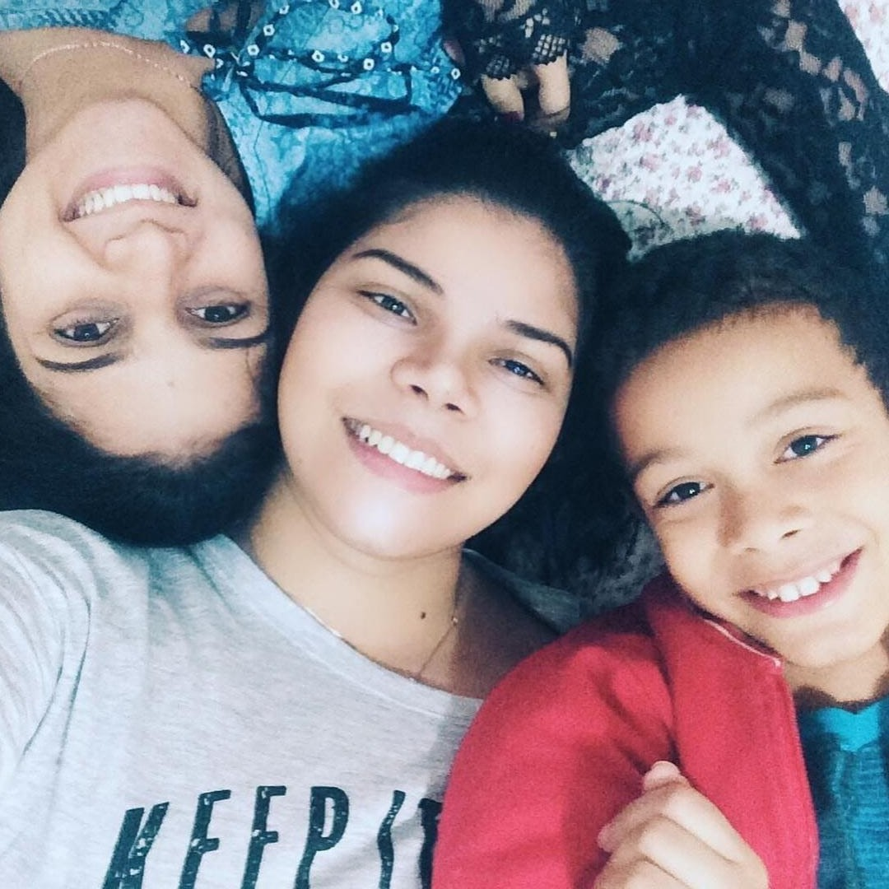

PRIMEIROS PASSOS
Comecei trabalhando como açougueiro, desenvolvendo disciplina e responsabilidade. Ao mesmo tempo, passei a estudar design para mídias sociais.
Antes dos projetos, das linhas de código e das ideias, existe uma trajetória que me trouxe até aqui.
↓ VIRAR A PÁGINA NEW / REGISTRO 01
ainda escrevendo
NEW / REGISTRO 01
ainda escrevendo

Nasci em Araguari e fui criado em Indianópolis , duas pequenas cidades do interior de Minas Gerais que moldaram quem eu sou. Venho de uma família que enfrentava algumas dificuldades financeiras, e durante meus primeiros anos de vida fui cuidado somente pela minha mãe. Aos quatro anos , diante dos desafios de criar três filhos sozinha, ela decidiu me entregar para adoção — um gesto difícil, mas movido pelo desejo de me oferecer uma vida melhor. Fui adotado por uma família de Indianópolis, uma casa com quatro membros que me acolheu com amor, cuidado e carinho desde o início. A adaptação não foi simples , mas com o tempo construímos laços verdadeiros. Hoje, considero essa família como minha base, meu porto seguro. Ainda assim, nunca deixei de lado minha família biológica — sempre que nos encontramos, o respeito, o afeto e o carinho permanecem os mesmos. Com o passar dos anos e a chegada das responsabilidades, amadureci e comecei a construir minha própria identidade. Me tornei uma pessoa proativa, comunicativa, curiosa e sempre disposta a aprender coisas novas . Tenho orgulho da minha trajetória e de como cada etapa — das dificuldades às conquistas — contribuiu para formar quem sou hoje.
Alguns capítulos que me trouxeram até aqui.
Comecei trabalhando como açougueiro, desenvolvendo disciplina e responsabilidade. Ao mesmo tempo, passei a estudar design para mídias sociais.
Entrei como Jovem Aprendiz na LD Celulose. Em 2024, criei minha agência de design e conciliei diferentes trabalhos com os estudos.
Passei a atuar com infraestrutura de TI na LD Celulose, como profissional terceirizado pela Global Integra, e iniciei minha graduação em Sistemas de Informação na Anhanguera.
Continuo aprofundando meus conhecimentos em desenvolvimento de software, banco de dados, infraestrutura e criação digital.
Quero continuar aprendendo, criar sistemas que resolvam problemas reais e crescer profissionalmente em desenvolvimento de software — sem deixar de lado o design e a criatividade.
→ VER MEUS PROJETOS☑ Aprender todos os dias
☑ Unir tecnologia e criatividade
□ Evoluir como desenvolvedor Full Stack
□ Construir novos projetos e experiências
CONTINUA...